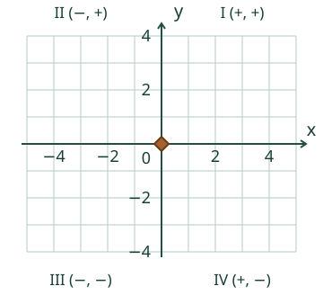
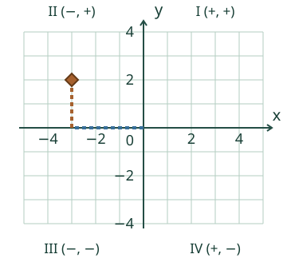
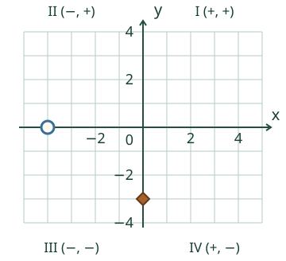
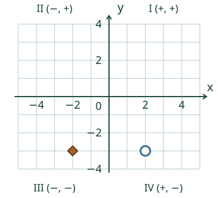
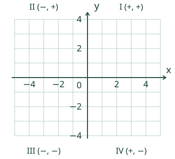

<link rel="stylesheet" href="lesson.css">
<section class="fn12" data-fn12-coord>

<section data-teaching-step="1" data-lesson-role="teaching-step">
<div class="intro"><p><strong>Loikan kartta jatkuu joka suuntaan.</strong> Tutki pisteiden paikkoja myös vasemmalla ja alhaalla.</p></div>
</section>


<section data-teaching-step="2" data-lesson-role="teaching-step">
<fieldset><legend>Siirrä pistettä</legend><div data-model-board tabindex="0" role="group" aria-label="Tutki koordinaatistoa. Nuolinäppäimet siirtävät, Home: origo."></div><p data-model-state>Kohta (0, 0): origo, akselien leikkauskohta.</p><div class="actions"><button type="button" data-action="left" class="primary" aria-label="Yksi väli vasemmalle">←</button><button type="button" data-action="right" class="primary" aria-label="Yksi väli oikealle">→</button><button type="button" data-action="down" class="primary" aria-label="Yksi väli alas">↓</button><button type="button" data-action="up" class="primary" aria-label="Yksi väli ylös">↑</button></div><details data-lesson-role="hint"><summary>Kirjoita paikka tai näytä apureitti</summary><div class="pair"><label>x, vaaka<input type="text" inputmode="text" data-model-x value="0" maxlength="128"></label><label>y, pysty<input type="text" inputmode="text" data-model-y value="0" maxlength="128"></label></div><p>Parissa on aina ensin x ja sitten y. Napautus valitsee lähimmän risteyksen. Voit käyttää myös nuolia tai kirjoittaa luvut.</p><div class="actions"><button type="button" data-action="phase">Apureitin vaihe</button><button type="button" data-action="model-zero">Origo</button></div><p data-phase-state>Apureitti on piilossa.</p><p>Apureitti näyttää ensin vaakasuunnan, sitten pystysuunnan. Piste on sama, vaikka kulkisit toista reittiä.</p></details></fieldset>
</section>

<nav class="anchors" aria-label="Oppitunnin kohdat" data-lesson-role="metadata"><a href="#coord12-examples">Näin merkit toimivat</a><a href="#coord12-practice">Kokeile itse</a><a href="#coord12-exit">Lopuksi</a></nav>

<section data-teaching-step="3" data-lesson-role="teaching-step">
<details id="coord12-examples" data-lesson-role="teaching-step"><summary>Näin merkit toimivat</summary><h2>Ensin x, sitten y</h2><figure data-lesson-role="worked-example"><figcaption><strong>(−3, 2)</strong>: x vie 3 väliä vasemmalle, y vie 2 ylös. Kohta on II neljänneksessä. <strong>(2, −3)</strong> olisi oikealla alhaalla, eri paikassa.</figcaption></figure><p>Yksi viivojen väli on yksi. Et laske lähtöviivaa askeleeksi. Neljännesten numerointi alkaa oikealta ylhäältä ja kiertää vastapäivään: I, II, III, IV.</p><h3>Akseli ei ole neljännes</h3><figure data-lesson-role="worked-example"><figcaption><strong>(−4, 0)</strong> jää x-akselille: y ei muutu. <strong>(0, −3)</strong> jää y-akselille: x ei muutu. Akselipisteet eivät kuulu mihinkään neljännekseen. <strong>(0, 0)</strong> on origo.</figcaption></figure><p data-lesson-role="question"><strong>Ennusta:</strong> jos vain y vaihtuu luvusta 2 lukuun −2, mikä muuttuu pisteen paikassa?</p><h3>Majakan peilipaikka</h3><figure data-lesson-role="worked-example"><figcaption>Majakka on <strong>(2, −3)</strong>. Sen peilipaikka y-akselin yli on <strong>(−2, −3)</strong>: 2 väliä akselille ja 2 sen toiselle puolelle. Korkeus y pysyy samana. Vain x vaihtaa merkkiä.</figcaption></figure></details>
</section>


<section data-teaching-step="4" data-lesson-role="teaching-step" data-audience-spacing="compact">
<section id="coord12-practice"><h2>Lue ja merkitse</h2><fieldset><legend>Oma kartta</legend><label>Tehtävä<select data-case><option value="plotII">II neljännes</option><option value="plotIII">III neljännes</option><option value="plotIV">IV neljännes</option><option value="plotI">I neljännes</option><option value="axisX">x-akseli</option><option value="axisY">y-akseli</option><option value="origin">Origo</option><option value="read">Lue annettu piste</option><option value="mirror">Majakan peilipaikka</option></select></label><p data-question>Merkitse (−3, 2). Ensin lukupari, sitten oma piste.</p><div data-answer-board tabindex="0" role="group" aria-label="Merkitse piste napauttamalla tai nuolilla. Home: origo."></div><div class="pair"><label>x, vaaka<input type="text" inputmode="text" data-answer-x maxlength="128" autocomplete="off"></label><label>y, pysty<input type="text" inputmode="text" data-answer-y maxlength="128" autocomplete="off"></label></div><p>Voit merkitä pisteen napauttamalla tai kirjoittamalla molemmat luvut. Nuolinäppäimet siirtävät; Home valitsee origon. Lue-tehtävässä kuva pysyy annettuna.</p><div class="actions"><button type="button" class="primary" data-action="check">Tarkista</button><button type="button" data-action="clear">Tyhjennä</button></div><output data-feedback data-result="neutral" aria-live="polite">Tarkista, kun olet valmis.</output><details data-lesson-role="hint"><summary>Tarvitsen apua</summary><p data-hint>x on −3: vasemmalle. y on 2: ylös.</p><button type="button" data-action="guide" aria-pressed="false">Näytä apureitti</button><p>Reitti auttaa lukemaan omaa tai annettua pistettä. Se ei muuta koordinaatteja.</p></details></fieldset></section>
</section>


<section data-teaching-step="5" data-lesson-role="teaching-step">
<details data-lesson-role="teaching-step"><summary>Lisää tutkittavaa</summary><p>Etsi tutkimuskartalta piste (−3, −2). Kokeile sitten (3, −2), (3, 2) ja (−3, 2). Mitkä luvut vaihtuvat? Piirrä paperille suorakulmio näistä kulmista.</p></details>
</section>


<section data-teaching-step="6" data-lesson-role="teaching-step">
<p id="coord12-exit" data-lesson-role="question"><strong>Lopuksi:</strong> miksi (−2, 0) on akselilla mutta (−2, −1) neljänneksessä?</p>
</section>

<details data-lesson-role="teacher-note"><summary>Opettajalle ja ilman ruutua</summary><p>Vuosiluokat 3–6, jäädytetty prosessirooli. Vaadittu AND: M-COORD-01 ja M-NEG-02. M-SYM-01 on peilausesimerkin samanaikaisesti opetettu tuki, ei uusi kova portti. Ruudun alue on x −5…5, y −4…4 kokonaislukuina; akselit ja origo ovat mukana mutta eivät neljännesten sisäpisteitä. Vastauskentissä sallitaan samanarvoiset etumerkilliset kokonaislukumerkinnät ja ylimääräiset nollat, raakateksti enintään 128 merkkiä; ei lausekkeita tai murtolukusyöttöä.</p><p>Piirrä paperille kohtisuorat akselit ja sovi tasavälinen yksikkö. Oppilas voi lukea parin, merkitä pisteen ja näyttää tai kirjoittaa, mistä hän aloitti ja miten hän valitsi suunnat. Tarjoa eri neljänneksiä ja akselipisteitä. Valinnainen vaaka–pysty-apureitti ei ole ainoa sallittu kulkureitti; koordinaattiparin järjestys on silti x,y. Vaiheet kuvaavat paikan rakentumista, eivät kulkuaikaa.</p><p>Paikallinen koordinaattivastaus tai napsautettu piste ei todista itsenäisen kokonaisen koordinaatistoprosessin, piirtovälineiden käytön tai viivästetyn hallinnan toteutumista. Opettajan havainto ja uudet tilanteet tarvitaan erikseen. Mallit ja vihjeet ovat opetustukea. Ei aikarajaa, henkilöhistoriaa tai muodollista hallintapäätöstä.</p></details>
<noscript data-lesson-role="metadata"><p>Ilman JavaScriptiä mallikuvat ja selitykset säilyvät. Piirrä annettu piste paperille; ruudun merkitseminen ja tarkistuspalaute tarvitsevat JavaScriptin.</p></noscript>
</section>
